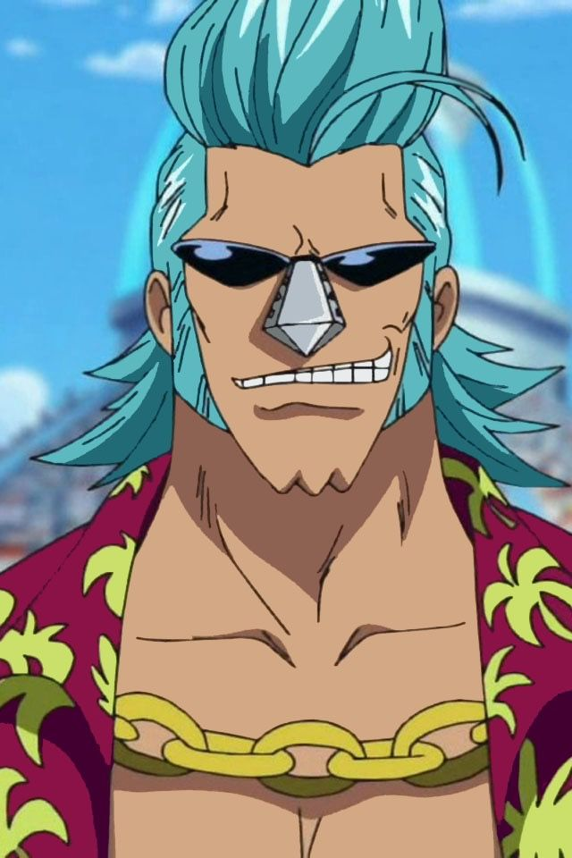
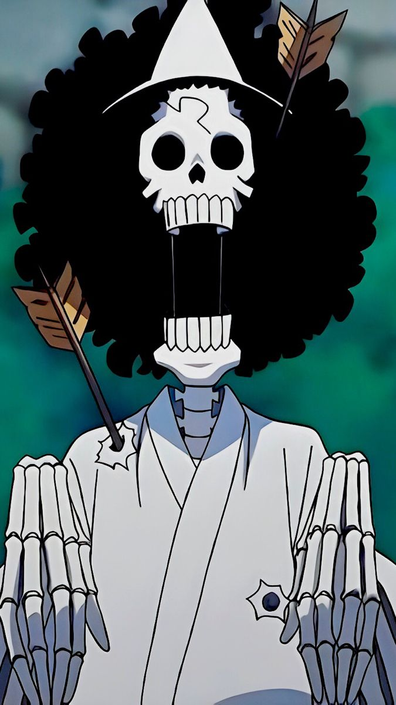
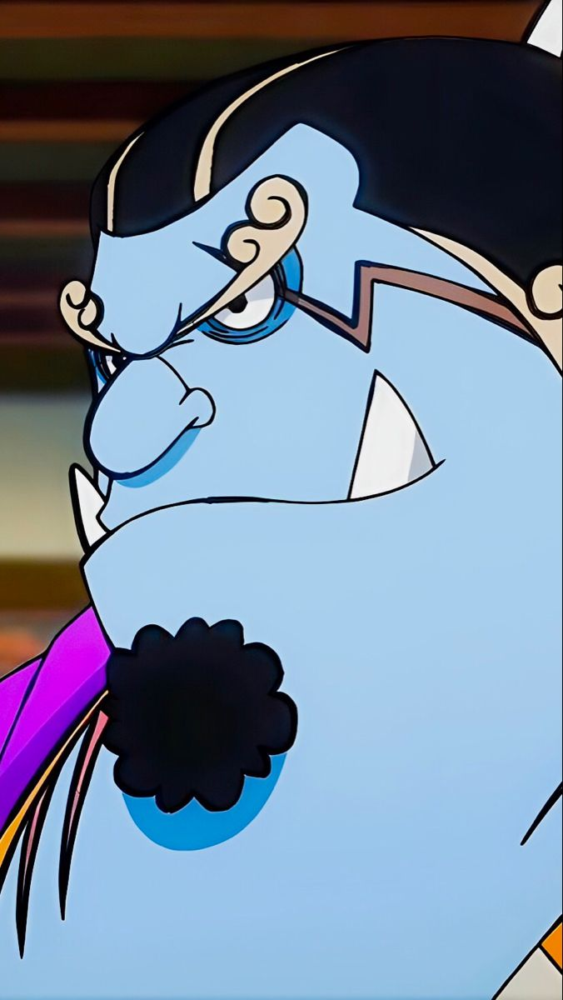

Discover the characters, their stories, and the quotes that marked their journey across the seas.

"Eu vou me tornar o Rei dos Piratas!"
"A frase mais característica do Luffy, repetida ao longo da série."

"Nada aconteceu."
"Uma das falas mais reconhecidas do Zoro pelos fãs, ligada ao momento em Thriller Bark."

"Luffy... me ajuda."
"Uma das cenas mais marcantes da Nami, durante o arco de Arlong Park."

"Eu nunca vou perdoar alguém que desperdiça comida!"
"Combina muito com o princípio do Sanji como cozinheiro."

"Eu quero viver!"
"Provavelmente a frase mais icônica da Robin, durante Enies Lobby."

"Eu sou o grande capitão Usopp!"
"Uma frase que representa bem a personalidade e as mentiras exageradas do Usopp."
"Integrantes da Tripulação do Chapeu de Palha"




